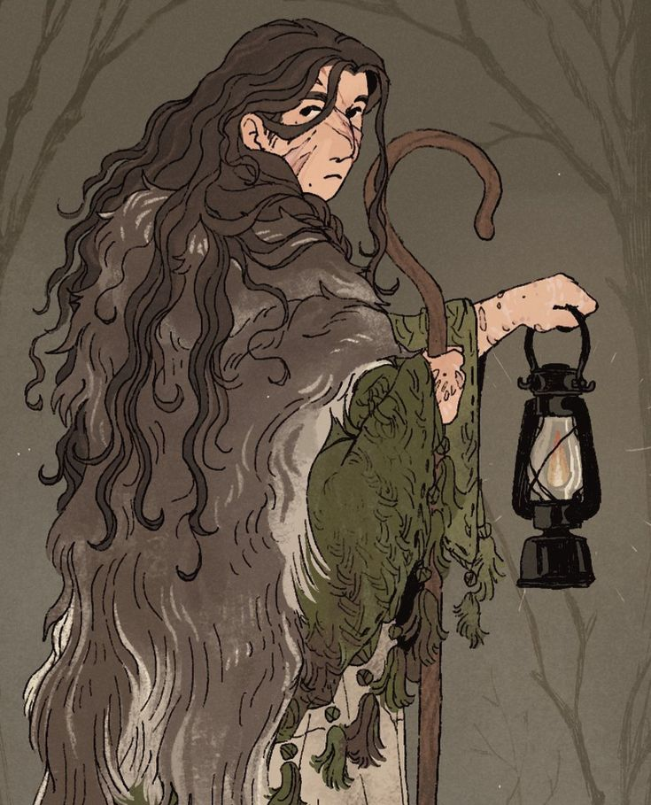
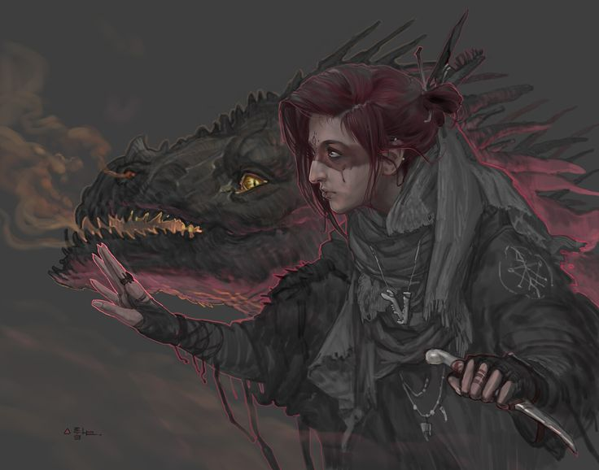
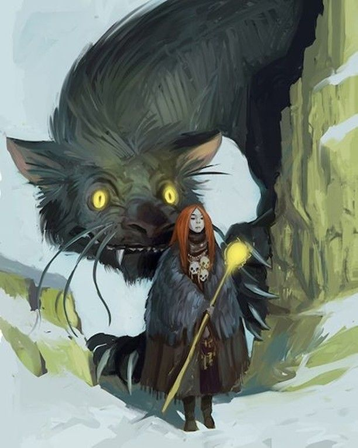

A Família Bester governa Temme, a cidade-estado erguida aos pés dos Montes de Beyond e dedicada à criação e ao adestramento de feras. Uma duquesia jovem — concedida ainda em vida de Aucrib — que aprendeu a transformar o talento de domar o selvagem em administração, orgulho e, para a mais nova da casa, também em liberdade.
✦ O DUQUE DE TEMME

✦ família bester
Damiel Bester
Veio de uma família de pastores e fazendeiros. Enquanto crescia, aprendeu a dominar todo tipo de fera — e foi isso que chamou a atenção de Clarisse. Encantada com sua sagacidade, ela o nomeou Duque quase no mesmo dia, e juntos criaram Temme: uma cidade-estado voltada à criação de animais, ao adestramento e ao treinamento de feras.
✦ A ADMINISTRADORA

✦ família bester
Kayte Bester
Irmã mais velha de Damiel. Inicialmente contra a ideia, acabou gostando da posição e sentindo orgulho de ver seu próprio trabalho, de certa forma, reconhecido. Atualmente administra as criações de animais de todo o Reino de Aucrib.
✦ A CAÇULA

✦ família bester
Mia Bester
A irmã mais nova ainda é uma criança — porém uma criança muito esperta. Aprendeu a se virar sozinha cedo demais, e a lidar com seres com o dobro do próprio tamanho. Vive dividida entre acompanhar os irmãos ou vagar pelos Montes de Beyond.